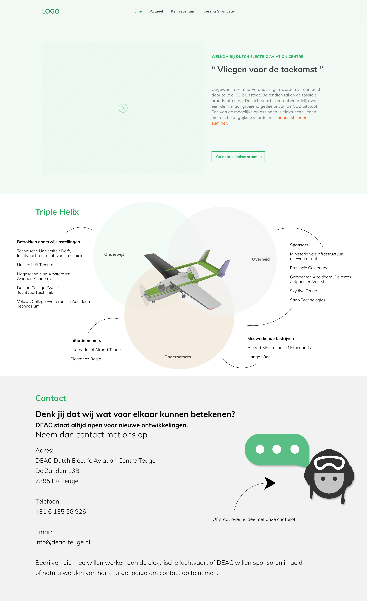
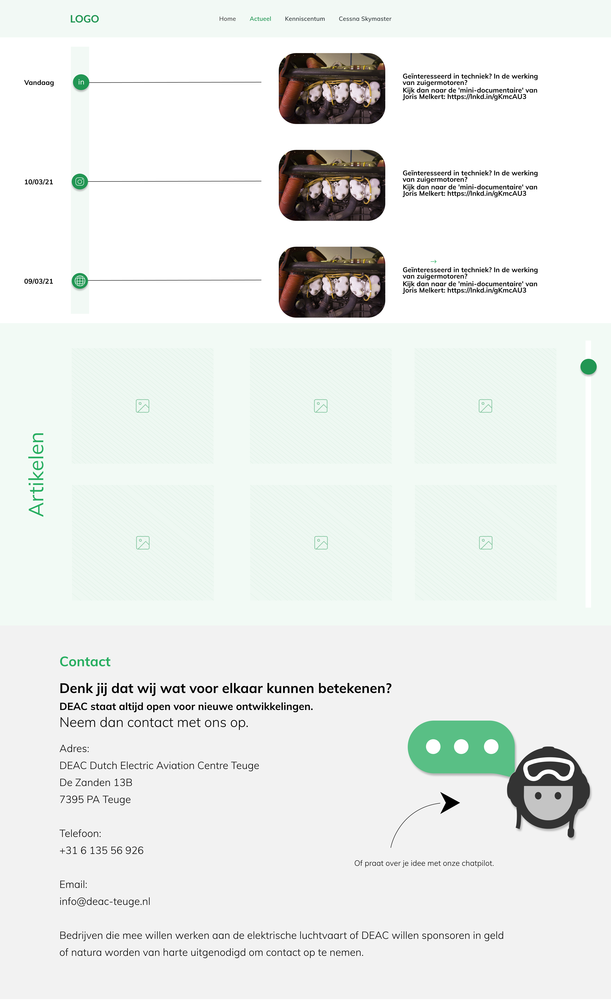
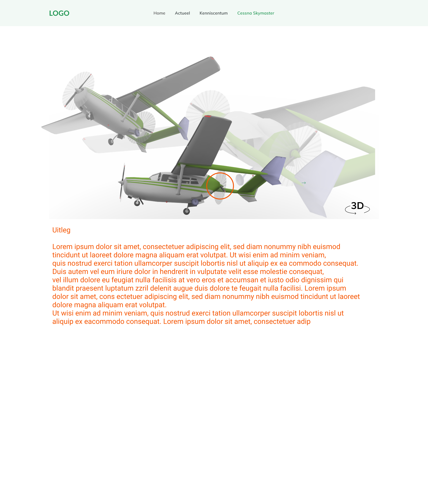
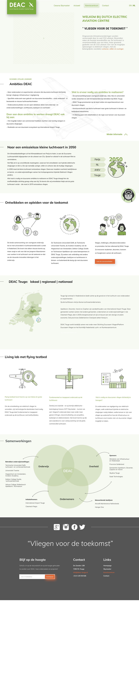
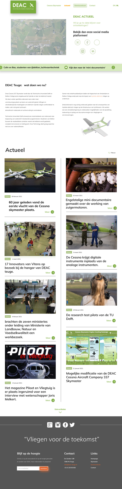
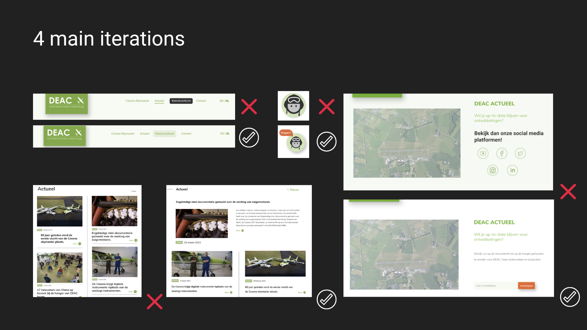

-
Overview
DEAC's current website is not yet used to its full potential. There are opportunities for improvement to achieve the website's goal; recruiting future collaborations and funding. I worked on this case during my internship at CMD Agency. In these 45 working days the research, testing and designing were done.
The design challenge:
How to bring DEAC's project - electric plane Cessna 337 Skymaster - to the attention of potential collaborations. To spread the transfer of information regarding DEAC in a more understandable way.My role
Project leader, overview of what, when and how to do. Lead role in prototyping design process.
Used tools
Click here for the dutch product biography Notion
Notion Adobe Creative Cloud
Adobe Creative Cloud Miro
Miro Figma
FigmaWant to work together?
Get in touch with me! -
Prototyping Proces
Drafts
-
MiFi prototype
The outlines is based on the all previous research on stakeholder and user requirements.
  
This is the Programme of requirements:
- User requirements
The user wants the information to be easy to understand.
The user wants to be aware of developments.
The user wants to understand research findings.
User wants to contact easily.
- Technical requirements
The product must contain a 60-second video.
The product must load within 0.5 seconds.
- Business requirements
The product must release all research results.
The product must be manageable for all audiences.
The product must encourage collaborations.
The product must be maintainable.
The product must include a video. -
1st HiFi prototype
This version is a result of combining 4 drafts. The strongest points of each draft were put into the second version.
 

This is the interactive 1st HiFi prototype:
-
Prototype Testing
See dutch test plan. The testplan has been used by testing the 1st HiFi prototype.
Most imporatant Test Results:
- Education institutions should be in the footer.
- Articles page poor flow. Most recent at the top and in chronological order from left to right.
- The facts under the dates button. (confusing flow)
- Glowing button is to much for in the house style.
- Sticky button does not stand out.
- Reference the Cessna skymaster as Flying testbed. So if in the future the plane is sprayed with this name, people will know they mean this plane. -
2nd HiFi Prototype
 This is the interactive 2nd HiFi prototype:
-